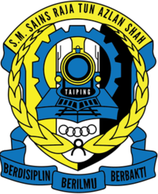

TABIKA KEMAS TEMERLOK
(2004-2005)

SEKOLAH KEBANGSAAN TEMELOK
(2006-2011)
SEKOLAH MENENGAH SAINS RAJA TUN AZLAN SHAH
(2012- 2016)

UNIVERSITI TEKNOLOGI MARA, DUNGUN, TERENGGANU
Diploma in Office Management and Technology
(2017-2020)
UNIVERSITY TECHNOLOGY MARA, MACHANG, KELANTAN
Bachelor student of Office Management System Technology
(NOW)

The reason why I chose pursuing my study in Office System because I saw this program is designed to take office
system management into 21st century
with cutting-edge knowledge and insights into the field of the office management and technology.
Overall, I enjoying involved myself into this course.